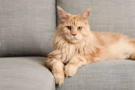

Кошачье поведение включает в себя язык тела (позы, хвост, уши), звуковые сигналы (мяуканье, мурлыканье, шипение), а также социальное взаимодействие и игры. Понимание кошачьего поведения требует терпения и наблюдения за сигналами питомца, чтобы удовлетворить его потребности в независимости, безопасности и общении.
Разновидности поведения.
Язык тела.
- Расслабленная поза: Кошка лежит на боку или спине, спокойно дышит, потягивается, что свидетельствует об уверенности и доверии.
- Поза страха/агрессии: Напряженное тело, согнутые конечности, прижатый хвост, шерсть дыбом, спина дугой, оскал.
- Настороженность: Выпрямленная спина, поднятый хвост, направленный назад, и внимательный взгляд.
Звуковые сигналы.
- Мяуканье: Используется для привлечения внимания и выражения различных потребностей, от просьбы еды до требования ласки.
- Скуление: Звук, похожий на плач, который также используется для привлечения внимания.
- Мурлыканье: Может указывать на удовлетворение, но также может быть признаком стресса или боли у кошки, что требует внимания хозяина.
- Шипение и рычание: Сигналы недовольства или агрессии.
Социальное поведение.
- Привязанность: Кошки — социальные животные, которые привязыватся к хозяину и проявляют к нему ласку.
- Потребность в независимости: Кошки ценят свою независимость и уважение к личному пространству, поэтому им необходимо свое место, где они могут побыть наедине.
- Игры: Кошки любят играть, что является важной частью их жизни и способом выражения эмоций.
Необычные привычки.

- Разминание лапами: Кошка "месит" лапами, что является проявлением комфорта и расслабления.
- Скребут пол возле лотка: Это может быть попытка закопать следы, а не признаком недовольства лотком.
- Вытаскивание еды из миски: Кошка может пытаться "добыть" еду, подобно тому, как она бы делала это на природе.
Как понять кошку.
- Наблюдение: Внимательно наблюдайте за мимикой, позами и звуками, которые издает ваша кошка.
- Терпение и воспитание: Терпение и знание "кошачьего языка" помогут вам найти общий язык с питомцем и построить крепкие доверительные отношения.
- Уважение к пространству: Обеспечьте кошке личное пространство и свое место, где она может чувствовать себя в безопасности.
Все кошки разные.
Характер кошки зависит от её породы, индивидуального темперамента, опыта воспитания и социализации, а также от условий окружающей среды и состояния здоровья. Особую роль играют первые месяцы жизни котенка, когда закладываются основы его поведения, и его взаимодействие с человеком.